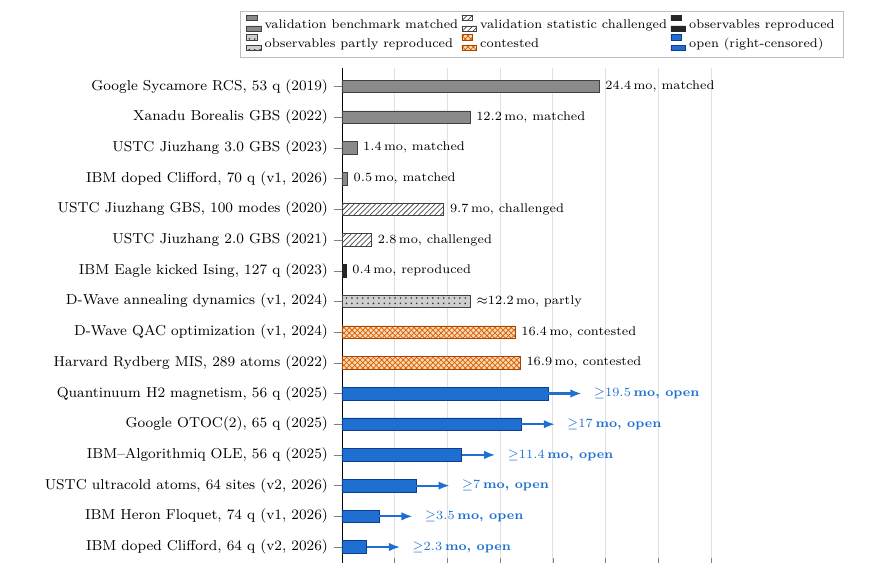

Abstract
Do advances in artificial intelligence (AI) and high-performance computing remove the need for quantum computers in science? Answering requires comparisons that fix the scientific output, the accuracy and the complete cost. We review quantum experiments, fault-tolerant resource estimates and classical methods across many-body physics, chemistry, materials and engineering simulation. Of sixteen device claims tracked, four were answered at their validation benchmark and two challenged on it, one at its reported observables and one in part, all by structured numerical or variational methods; two are contested and six remain unmatched in the regimes tested. Neural methods also act as direct wavefunction solvers and support useful workflows through reusable predictions and reformulation. Source checks show why broad rankings are unreliable: classical baselines may use limited hardware or another accuracy criterion, while quantum estimates depend on state preparation, repeated executions and future error-corrected hardware. Recent compilations cut some chemistry estimates to hours on about a million physical qubits, but matched end-to-end comparisons remain incomplete. For engineering linear systems and fluid dynamics, no practical quantum advantage over a strong classical workflow is established: published estimates are dominated by conditioning, data access and readout, and the remaining proposals are conditional and polynomial. Quantum-native and high-dimensional problems with scalar outputs are the natural candidates. We provide a versioned evidence ledger, explicit resource models and the tests that would change each assessment. The result is a framework for judging contributions to scientific answers, not a ranking of computing paradigms.
Device claims and classical responses

What the current version finds
- Comparisons disagree mainly because they do not fix the same thing. The paper compares one instance, one observable and one accuracy, with the complete cost on each side.
- Of sixteen device claims, eight have received a classical response at or on their own validation test, two are contested and six are open. None of the responses needed a neural network.
- Fault-tolerant estimates for chemistry have fallen to hours on about a million physical qubits for one energy of a named model. State preparation, repetitions and a matched classical result are still missing.
- For engineering linear systems and fluid dynamics, no practical quantum advantage over a strong classical workflow is established. The author's assessment is that quantum linear solvers are unlikely to accelerate engineering linear algebra as it is practised; the paper states the test that would change this.
- The plausible quantum contributions are conditional: quantum-native inputs, scalar outputs, and regimes where classical methods lack an established accuracy and cost. Each is listed with the evidence it still needs.
Evidence ledger
Every number that enters a figure or a ratio is stored with its source version and locator, and is recomputed by a validator before each release. Values known only from an abstract or at second hand are marked and kept out of figures.
The tables and scripts are in paper/ledger/ of the repository; three commands rebuild the tables, the figure data and the tests.
Release history
| Version | Date | What changed |
|---|---|---|
| 8.2 | 11 Nov 2026 | No caption names a colour; every series is identified by shape, line style, hatching or a label. |
| 8.1 | 11 Nov 2026 | Figures made readable without colour. |
| 8 | 11 Nov 2026 | Engineering conclusion restated as an empirical finding plus a labelled assessment. Boson sampling split into four experiments. OTOC timing corrected from the primary paper. Navier–Stokes, drag and gauge-theory counts read in the primary sources. |
| 7.1 | 11 Nov 2026 | Consistency pass; primary-source reads for the linear-solver studies. |
| 7 | 11 Nov 2026 | Full rewrite in eight sections; linear systems and fluid dynamics added as a negative case. |
Earlier versions were internal drafts. Full change logs are in the repository.
How this document is kept current
About once a month the sources behind every entry are searched again: new versions of cited papers, new classical responses to open device claims, new device claims, and new resource estimates. A value is entered only after it has been read in the primary source. Each update is a numbered release with a change log that lists corrections first.
Corrections are welcome. An issue that names the source, its version and the table, equation or page with the right value can be checked and merged quickly.
How to cite
S. Matsuoka, “AI+HPC versus Quantum Computing on the Same Scientific Problems: Matched Tasks, Complete Costs and Conditional Opportunities,” version 8.2, 11 November 2026. Please cite the version you used.